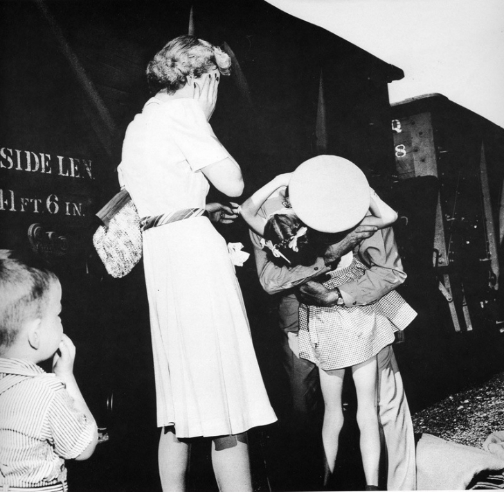

1943 yılında Omaha, Nebraska’ya elli kilometre uzakta yer alan 1100 nüfuslu küçük Villisca kasabası tatlı bir heyecan ile güne merhaba demişti. Kuzey Afrika’da panzer taburlarına karşı savaşarak yararlılıklar gösterip, Amerika Birleşik Devletleri tarafından Üstün Hizmet madalyası ile onurlandırılmış olan Yarbay Robert Moore 16 ay sonra tren yolu ile evine, ailesine dönüyordu. Robert Moore’un ailesi ve arkadaşları tren garında ona karşılamak için yerlerini aldılar. 14 Temmuz günü gelmesi gereken tren 24 saat gecikmeli olarak 15 Temmuz 1943 tarihinde gara ulaştı. 24 saatten fazla süre garda gelişini bekleyen ailesinin ve arkadaşlarının yanında Earle Bunker fotoğraf makinesi ile Omaha World-Herald yayınları adına hazır bekliyordu. Yarbay Robert Moore trenden indi, onu karşılayan kızı, babasının kucağına atladığı sırada Earle Bunker’de deklanşöre dokundu. Savaş sonrasında unutulmaz bir Amerikan mirası haline gelen kare, cephede bulunan askerler için umut oldu. Birçok aile cephedeki askerlere fotoğrafın basılmış olduğu gazeteyi göndererek umut vermeye çalıştı. Earle Bunker Homecoming başlıklı fotoğrafı ile 1944 yılında Pulitzer Fotoğrafçılık Ödülü’nü Frank Filan ile paylaştı.
